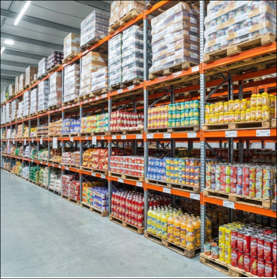

Technology Consulting
Technology guidance and professional expertise to help organisations address business and IT challenges.
Technology expertise. Commercial connections. Practical business support.
GMX is the IT consulting and commercial services business within RKY Group. It is envisioned to connect organisations with technology expertise, business services and relevant commercial opportunities.
With a practical, relationship-led outlook, GMX aims to help businesses navigate needs, identify suitable capabilities and make useful connections.
Contact RKY Group →GMX’s public-facing focus is on the areas below. Specific services can be discussed according to each organisation’s needs.
Technology guidance and professional expertise to help organisations address business and IT challenges.
Digital capabilities and solution-oriented thinking aligned with evolving business requirements.
Ongoing professional support designed around continuity, service quality and business priorities.

Connecting organisations with relevant services and capabilities across business needs.
Helping bring customers, specialist expertise and potential partners into useful conversations.
Exploring relevant products and commercial opportunities that complement customer requirements.
GMX brings a broad commercial perspective to technology and business services. The aim is to make it easier for organisations to find relevant expertise and explore ways to work together.
Contact RKY Group to discuss a potential requirement or commercial opportunity.
Contact Us →